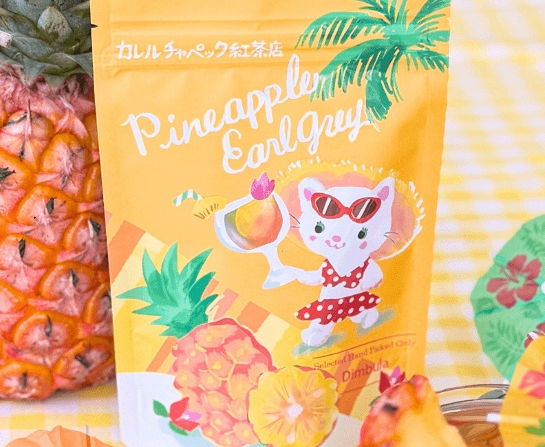
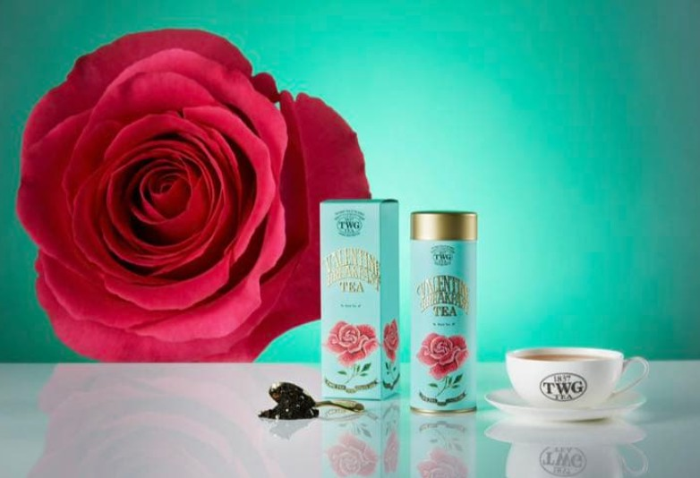
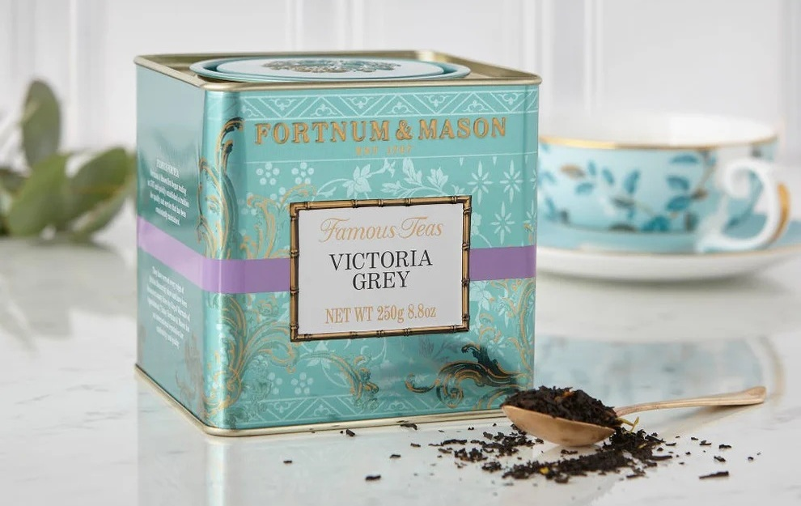
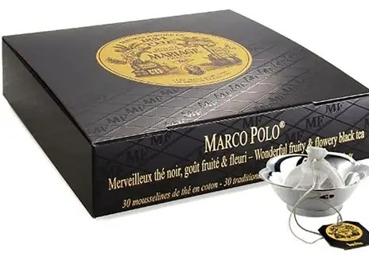

- トップ >
- おすすめの紅茶紹介
基本の茶葉
| 茶葉名 | 産地 | 特徴 |
|---|---|---|
| ダージリン | インド | 爽やかで華やかな香り |
| アッサム | インド | 濃厚なコクと甘み |
| ウバ | スリランカ | 爽快感のある香りと渋み |
| キーマン | 中国 | 甘く上品な香り |
| ニルギリ | インド | すっきりとして飲みやすい |
| ディンブラ | スリランカ | バランスの良い味わい |
| ヌワラエリヤ | スリランカ | 高原らしい爽やかな香り |
| キャンディ | スリランカ | まろやかで飲みやすい |
| ルフナ | スリランカ | 濃厚で力強い風味 |
| ケニア | ケニア | コクがありミルクティー向き |
| ラプサンスーチョン | 中国 | 燻製のような独特の香り |
| ジャワ | インドネシア | やさしい渋みと香り |
おすすめの商品紹介
お気に入りの茶葉の商品を中心に紹介します。
水出しパイナップルアールグレイ

とびきり新鮮な旬のディンブラ茶を100%使用。ジューシーで甘いパイナップルの香りがはじける、夏限定のアールグレイです。 鮮度抜群だからこそ、どんな飲み方・温度でもディンブラ茶の特徴が際立ちます。 パイナップルに続きベルガモットの爽やかさが立ち上る、華やかで心弾む一杯を。 カレルチャペックの商品は特に飲みやすく、初心者にもおすすめです。
バレンタインブレックファースト

甘く華やかな香りが特徴のブレンドティーで、朝の時間を少し特別にしてくれます。 コクもありながら飲みやすく、ストレートでもミルクでも楽しめます。 TWG Teaの代表的なフレーバーの一つです。
ビクトリアグレイ

アールグレイ系の紅茶で、柑橘の爽やかな香りと上品な味わいが特徴です。 落ち着いた香りでリラックスタイムにぴったりです。 フォートナム・アンド・メイソンの紅茶として知られています。
マルコポーロ

フルーティーで甘い香りが特徴のフレーバーティーで、 一口飲むだけで華やかな香りが広がります。 渋みが少なく飲みやすいため、紅茶が苦手な人にもおすすめです。 マリアージュフレールの代表的な茶葉として人気があります。